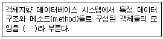
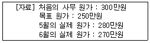

사무자동화산업기사 (2004-08-08 기출문제)
1과목: 사무자동화 시스템
1. 사무자동화의 등장 배경과 거리가 먼 것은?
- 컴퓨터 기술의 발달
- 정보의 대량화 및 다양화
- 고급 사무인력 과다
- 사무실 운영비의 증대
(정답률: 72%)

2. 사무자동화를 통한 생산성 향상의 척도 기준으로 적합하지 않은 것은?
- 효율성
- 기기의 독립성
- 유효성
- 창조성
(정답률: 70%)
3. 컴퓨터 이용 기술의 발달과 함께 인지(인식) 기술을 이용한 제품들이 활용되고 있다. 만일 전화 목소리를 이용하여 고객으로부터 주문을 받고자 한다면 필요한 기술은?
- 영상 인식 기술
- 음성 인식 기술
- 문자 판독 기술
- 자기 테이프 녹음 기술
(정답률: 94%)
4. 사무자동화의 기본요소에 관련된 사항으로 적절하지 않은 것은?
- 철학은 사무자동화에 대한 명료한 개념을 파악하고 자동화를 위한 계획 및 실천에 대한 확고한 신념과 의지를 말한다.
- 적절한 장비의 활용은 사무자동화를 활성화하고 사무 생산성 향상에 기여한다.
- 사무실 내의 인간관계는 가시적인(또는 유형적인) 시스템이다.
- 사무자동화의 주체는 사람이다.
(정답률: 84%)
5. 다음 중 사무자동화의 효과 중 정량적 효과에 해당하는 것은?
- 경쟁력 강화, PR 효과에 따른 매출액 증대
- 시장 환경의 변화에 신속히 대처
- 대외 이미지의 개선
- 과거에 불가능했던 일이나 조사가 가능
(정답률: 70%)
6. 메카트로닉스(Mechatronics)를 설명한 것으로 맞는 것은?
- mechanics(기계공학)와 electronics(전자공학)의 합성어이다.
- mechantoci(메킨토시컴퓨터)와 Unix(유닉스)의 합성어이다.
- machinery(기계류)와 Mix의 합성어로 여러 가지 기계류를 말한다.
- mechanism(기계론)과 NICS(신흥공업론)의 합성어로 기계공업이 발달한 나라를 말한다.
(정답률: 84%)
7. 인텔리전트빌딩에 관한 내용 중 설명이 부적당한 것은?
- 최대의 목표는 인간의 능력을 최대로 발휘할 수 있는 이상적인 환경의 창조에 있다.
- 정보통신시스템, 사무자동화시스템, 빌딩관리시스템, 환경관리시스템, 보안시스템 등으로 구성된다.
- 개방시스템으로 구성된 개인이나 개별 사무와 기업 등의 사무처리가 폐쇄시스템으로 변환된다.
- 사무 생산성의 향상, 사무작업의 노동생활 향상을 가져올 수 있다.
(정답률: 78%)
8. 뉴미디어의 분류체계 중 정보전달 매체를 기준으로 분류할 때 해당되지 않는 것은?
- 무선계
- 유선계
- 영상계
- 패키지계
(정답률: 70%)
9. 자기 테이프의 레코드 크기가 70자이고, 블록 크기가 2800자인 경우 블록화 인수는 얼마인가?
- 35
- 40
- 45
- 50
(정답률: 87%)
10. 다음 중 집중처리시스템의 특징에 가장 적합한 것은?
- 확장성이 우수하다.
- 전사적 관리가 용이하다.
- 시스템 전체의 신뢰성이 높다.
- 조직 요구에 대한 대응이 용이하다.
(정답률: 62%)
11. 데이터베이스의 특징과 가장 밀접한 항목은?
- 데이터의 중복성
- 데이터의 일관성
- 데이터의 모순성
- 데이터의 종속성
(정답률: 68%)
12. 뉴미디어의 특징에 관한 설명 중 옳지 않은 것은?
- 정보를 주고받는 대화형식의 통신으로 상호 작용성이 있다.
- 개인이 필요한 시기에 메시지를 보내고 받을 수 있는 비동시성이 있다.
- 전기통신계통 미디어, 영상, 화상미디어가 많이 사용된다.
- 뉴미디어는 단방향 통신만으로 메시지를 전달한다.
(정답률: 89%)
13. 사무자동화 시스템에 기대하는 것은 목적 실현이다. 다음 중 사무자동화 시스템의 목적에 가장 거리가 먼 것은?
- 욕구의 다양화에 대처
- 처리의 신속화와 정확화
- 처리의 투명화
- 비정형적 업무의 자동화
(정답률: 59%)
14. 다음 중 전자우편(E-mail)을 보낼 때 사용하는 프로토콜은?
- HTTP
- SMTP
- FTP
- SNA
(정답률: 79%)
15. 사무실 공간설계 과정에 대한 내용이 아닌 것은?
- 공간배치 계획
- 추진 전담반 편성
- 의사소통 계획
- OA도입 계획
(정답률: 50%)
16. 사무자동화 시스템의 부분별 서브시스템에 관한 사실의 분석에서 고려해야 할 사항과 거리가 가장 먼 것은?
- 업무의 부분 최적화가 가능한가의 여부를 판단해야 한다.
- 계획과 일치하고 있는지를 검토해야 한다.
- 총괄 시스템에 대한 투자의 효율을 측정해야 한다.
- 추가적인 개선의 필요성에 대해서 분석해야 한다.
(정답률: 77%)
17. 정보를 저장하는 데 사용되는 하드디스크 장치의 용어가 아닌 것은?
- sector
- track
- cylinder
- BOT
(정답률: 85%)
18. 문자, 도표, 사진 등의 정지화상을 화소로 분해하여 전기적 신호로 변화하여 전송하여 원래대로 복원 기록하는 전송기기는?
- 텔렉스
- 팩시밀리
- 텔레타이프
- 텔레텍스트
(정답률: 70%)
19. 컴퓨터를 분류하는 방법이 아닌 것은?
- 세대별 분류
- 데이터의 표현방식에 따른 분류
- 용량 및 성능에 따른 분류
- 가격 및 외양에 따른 분류
(정답률: 88%)
20. 아래 설명의 괄호에 들어갈 단어로 적당한 것은?

- 튜플(tuple)
- 어트리뷰트(attribute)
- 클래스(class)
- 릴레이션(relation)
(정답률: 80%)
2과목: 사무경영관리 개론
21. 다음 중 사무작업상 적절한 습도는 몇 [%] 정도인가?
- 70~90
- 50~70
- 30~50
- 10~30
(정답률: 62%)
22. 빌딩, 공장, 대학 캠퍼스 등과 같이 한정된 영역을 대상으로 설치되는 통신망으로써 구내 통신망이라고도 불리는 용어는?
- LAN(Local Area Network)
- VAN(Value Added Network)
- WAN(Wide Area Network)
- ISDN(Integrated Service Digital Network)
(정답률: 80%)
23. 문서정리 보존의 일반원칙과 거리가 먼 것은?
- 보존할 문서는 가능한 줄인다.
- 보존문서의 정리, 폐기를 자주해야 한다.
- 문서보존규정을 제정하고 이를 준수한다.
- 되도록 권위가 없는 문서로 작성해야 한다.
(정답률: 77%)
24. 다음 자료에서 6월 사무관리의 원가절감 목표 달성도는 몇 %인가?

- 20
- 40
- 60
- 80
(정답률: 61%)
25. 사무소의 위치를 선정할 때의 기준과 거리가 먼 것은?
- 회사인 경우 거래처와의 연락이 편리한 곳
- 지사 혹은 지점이 있을 때 조직전체에 대한 봉사를 최대한으로 할 수 있는 곳
- 근처에 생활환경이 편리한 주거시설이 있는 곳
- 유사한 업종이 한 곳에 집합하여 있지 않은 곳
(정답률: 73%)
26. 관리과정 중 가장 우선적으로 실시하여야 하는 것은?
- 조직화
- 계획화
- 통제화
- 민영화
(정답률: 80%)
27. 다음 중 사무관리의 3대 주요기능과 가장 거리가 먼 것은?
- 연결기능
- 정보기능
- 판단기능
- 관리기능
(정답률: 70%)
28. "경영체는 인체요, 사무는 신경계통"이라고 주창한 자는?
- 레핑웰(Leffingwell)
- 로빈슨(Lobinson)
- 달링톤(Darlington)
- 피터슨(Peterson)
(정답률: 63%)
29. 전자사서함과 EDI의 유사한 점은?
- 메시지 파일의 축적, 전송이다.
- 기업내외의 인간과 인간사이의 통신이다.
- 컴퓨터 상호간의 통신에 의해 기계가 자동 판독한다.
- 전달된 데이터가 구조화되어 있지 않고 다양한 양식으로 되어 있다.
(정답률: 52%)
30. 사무의 설명으로 가장 적합하지 않은 것은?
- 기업 경영 본래의 목적이다.
- 경영 활동에 필요한 정보를 전달한다.
- 정보를 수집하고 처리한다.
- 경영 활동에 순서와 통제를 가하는 일이다.
(정답률: 56%)
31. 사무의 시스템적 관점에 대하여 가장 올바르게 설명한 것은?
- 시스템은 독립적이므로 각 부서별 사무 처리는 서로 연관성이 없다.
- 사무 시스템은 경영 각 부분의 전체가 상호 관련되어 시너지 효과를 가진다.
- 사무 관리의 용이성만을 강조하여 사무 관리의 생산성을 증대한다.
- 사무 관리의 목표를 더욱 효과적으로 달성하기 위해 특정 부분을 강조한다.
(정답률: 74%)
32. 다음 중 소음을 차단할 수 있는 벽의 형태와 두께로 가장 바람직한 것은?
- 나무벽 20cm 이상
- 벽돌벽 10cm 이상
- 흙벽 10cm 이하
- 철근 콘크리트벽 20cm 이상
(정답률: 79%)
33. 다음 중 사무 간소화의 목적으로 볼 수 없는 것은?
- 사무작업을 용이하게 처리
- 사무업무를 정확히 처리
- 사무업무를 신속히 처리
- 사무업무 인력을 증원 처리
(정답률: 90%)
34. 다음 중 사무의 본질을 기능적 측면에서 구분한 것은?
- 대화와 독해기능
- 독해와 정보처리기능
- 정보처리와 결합기능
- 사서와 분류정리기능
(정답률: 80%)
35. 사무관리 조직 계획화의 필요성과 거리가 가장 먼 것은?
- 관리의 다른 부분에 대하여 경제적, 효과적인 방법으로 서비스를 제공하기 위하여
- 사무관리 부서에 종사하고 있는 모든 구성원들이 각자 자기의 직책이 무엇인가를 정확히 알 수 있도록 사무 기능을 조직화하기 위해
- 관리 전반을 담당하는 고위 관리자에게 과학적으로 조직화된 사무관리 부서가 어떻게 조직 전체를 위해 봉사하는가를 알리기 위해
- 조직 내의 모든 부서에서 각자가 하는 사무작업에 대해 해당부서의 관리자가 의사결정자로서의 영향력을 행사하기 위해
(정답률: 49%)
36. 사무실의 환경조성지침으로 적절하지 않은 것은?
- 습도 및 온도조건을 유지하도록 한다.
- 소실주의를 가능한 제한한다.
- 타부서를 먼저 배치하고 주된 부서를 나중에 배치한다.
- 불규칙한 형태보다 장방형의 사무실이 경제적인 배치에 유리하다.
(정답률: 87%)
37. 사무 관리의 기능에 포함하지 않은 것은?
- 경영활동의 보조기능
- 경영관리의 도구
- 급여획득을 위한 활동
- 조직체의 각 활동을 통합하는 기능
(정답률: 82%)
38. 워드프로세서가 일반 타자기보다 이로운 점이라고 볼 수 없는 것은?
- 문장의 수정이 용이하다.
- 문장을 정리할 수 있다.
- 문서를 종이로 출력할 수 있다.
- 문서의 저장과 검색에 유리하다.
(정답률: 76%)
39. 프로그램 저작권은 어느 때부터 발생하는가?
- 프로그램이 창작된 때부터
- 프로그램이 공표된 후부터
- 프로그램이 일반에게 배포된 후부터
- 프로그램이 복제된 후부터
(정답률: 80%)
40. 조직의 형태에는 라인조직, 스탭조직, 라인과 스탭조직, 위원회 조직이 있다. 여기서 라인조직의 장점인 것은?
- 상위자에 너무 많은 책임이 맡겨진다.
- 전체의 통일성과 질서가 유지된다.
- 각 부문 간의 유기적 조정이 곤란하다.
- 전문화가 결여된다.
(정답률: 80%)
3과목: 프로그래밍 일반
41. 고급언어를 기계어로 바꾸는 역할을 하는 것은?
- 로더
- 컴파일러
- 운영체제
- 링커
(정답률: 85%)
42. C 언어에서 반드시 포함해야 하는 것은?
- main 함수
- 주석문
- 출력문
- 할당문
(정답률: 76%)
43. 수식 " *+AB-CA " 에 사용된 표기법은?
- Prefix 표기법
- Postfix 표기법
- Infix 표기법
- Outfix 표기법
(정답률: 72%)
44. Array 구조와 가장 밀접한 구조는?
- 순차구조(Sequential structure)
- 접속구조(Linked structure)
- 리스트구조(List structure)
- 환형접속구조(Circular linked structure)
(정답률: 70%)
45. C 언어의 기억 클래스에 해당하지 않는 것은?
- 내부 변수(internal variable)
- 자동 변수(automatic variable)
- 레지스터 변수(register variable)
- 정적 변수(static variable)
(정답률: 56%)
46. 포인터 자료 형에 대한 설명으로 옳지 않은 것은?
- 고급언어에서는 사용되지 않고 저급언어에서 주로 사용되는 기법이다.
- 객체를 참조하기 위해 주소를 값으로 하는 형식이다.
- 커다란 배열에 원소를 효율적으로 저장하고자 할 때 이용한다.
- 하나의 자료에 동시에 많은 리스트의 연결이 가능하다.
(정답률: 67%)
47. 어휘 분석기(lexical analyzer)에 대한 설명으로 옳지 않은 것은?
- 원시 프로그램(source program)을 읽어 들여 토큰(token)이라는 문법적 단위(syntactic entity)로 분석한다.
- 프로그래머가 프로그램의 설명을 위해 쓴 주석(comment)은 어휘 분석기에서 모두 처리된다.
- 어휘 분석기는 일명 스캐너(scanner)라고도 불리운다.
- 어휘 분석기는 그 결과물로서 파스트리(parse-tree)를 생성한다.
(정답률: 50%)
48. 컴파일러와 인터프리터의 가장 큰 차이점은?
- 프로그램의 번역
- 프로그램의 신뢰도
- 목적프로그램의 생성
- 원시프로그램의 생성
(정답률: 75%)
49. 대부분의 고급 프로그래밍 언어에서 제공하는 예약어 목록에 관한 설명으로 거리가 먼 것은?
- 예약어의 사용은 프로그램의 판독성을 저해한다.
- 프로그램을 번역할 때 예약어의 사용은 심볼 테이블 검색 시간을 단축시킨다.
- 예약어의 사용은 오류가 발생하였을 때 오류회복(error recovery)을 가능케 한다.
- 예약어의 수가 필요 이상으로 늘어나면 프로그래머가 모두 기억하기가 어려우므로 프로그래밍이 번거롭게 될 수도 있다.
(정답률: 70%)
50. 형식 문법에서 type 1 문법을 인식하는데 사용되는 인식기는?
- Finite Automata
- Push Down Automata
- Linear Bounded Automata
- Turing Machine
(정답률: 49%)
51. 시스템 프로그래밍에 가장 적합한 언어는?
- C
- Cobol
- Fortran
- Pascal
(정답률: 90%)
52. 이항(binary) 연산이 아닌 것은?
- xor
- or
- and
- complement
(정답률: 89%)
53. C 언어에서 기본 자료 형에 해당되지 않는 것은?
- 배열형(array)
- 정수형(int)
- 실수형(float)
- 문자형(char)
(정답률: 79%)
54. 프로그래밍 언어의 구문형식을 정의하는데 가장 일반적인 표현방식은?
- Backus-Naur Form
- Algorithm
- DNF
- HIPO
(정답률: 49%)
55. 전자계산기의 연산장치에 대한 설명으로 옳지 않은 것은?
- 연산장치는 가산기(Adder), 누산기(Accumulator), 플립플롭 등으로 구성된다.
- 연산장치는 산술연산만 수행한다.
- 레지스터에 기억된 데이터를 입력받아서 연산을 수행한다.
- 연산 수행에 필요한 제어 시그널은 제어장치를 통해 전달받는다.
(정답률: 76%)
56. 프로그래밍 언어에서 일반적으로 사용되는 표기법은?
- prefix
- postfix
- infix
- orderfix
(정답률: 77%)
57. 작성된 표현식이 BNF의 정의에 의해 바르게 작성되었는지를 확인하기 위해 만들어진 tree의 명칭은?
- parse tree
- binary search tree
- binary tree
- skewed tree
(정답률: 79%)
58. 로더의 기능이 아닌 것은?
- allocation
- linking
- compile
- loading
(정답률: 74%)
59. 주기억 장치의 부족한 용량을 해결하기 위해 보조기억 장치를 주기억 장치처럼 사용하는 기법을 무엇이라고 하는가?
- 인터프리팅 기법
- 가상(Virtual) 기법
- 컴파일러 기법
- 오버레이 기법
(정답률: 81%)
60. 자료 객체의 별명(alias)에 관한 설명으로 옳지 않은 것은?
- 자료 객체는 생존기간 중 여러 별명을 가질 수 있다.
- 일반적으로 별명은 프로그램의 이해를 매우 어렵게 한다.
- 자료 객체가 여러가지 별명을 갖는 경우 프로그램의 무결점 검증이 쉬워진다.
- 같은 참조환경에서 다른 이름으로 같은 자료객체를 참조할 수 있는 언어의 경우, 프로그래머에게 심각한 어려움을 줄 수 있다.
(정답률: 69%)
4과목: 정보통신 개론
61. DSU(Digital Service Unit)의 역할은?
- 아날로그 데이터를 디지털 신호로 변환시킨다.
- 디지털 신호를 아날로그 데이터로 변환시킨다.
- 아날로그 신호를 디지털 데이터로 변환시킨다.
- 디지털 데이터를 디지털 신호로 변환시킨다.
(정답률: 70%)
62. 다음 중 에러검출 및 에러정정이 가능한 것은?
- 수평패리티검사
- 수직패리티검사
- 그룹계수검사
- 해밍(Hamming)코드
(정답률: 84%)
63. 다음 교환방식 중 메시지 저장 여부에 관한 성격이 다른 하나는?
- 메시지 교환방식(message switching)
- 회선 교환방식(circuit switching)
- 데이터그램 패킷교환방식(datagram packet switching)
- 가상회선 패킷교환방식(virtual circuit packet switching)
(정답률: 46%)
64. 음성의 디지털 신호 전송에 필요한 변조방식은?
- 진폭 변조
- 주파수 변조
- 위상 변조
- 펄스 부호 변조
(정답률: 52%)
65. 데이터와 정보의 진화과정을 가장 적합하게 순차적으로 나타낸 것은?
- 데이터(Data) - 정보(information) - 지식(Knowledge) - 지능(intelligence)
- 정보(information) - 데이터(Data) - 지식(Knowledge) - 지능(intelligence)
- 데이터(Data) - 정보(information) - 지능(intelligence) - 지식(Knowledge)
- 데이터(Data) - 지식(Knowledge) - 정보(information) - 지능(intelligence)
(정답률: 70%)
66. OSI 참조모델에서 계층화의 구성요소 중에서 서비스 프리미티브에 해당되는 것은?
- 요구, 지시, 응답, 확인
- 접속, 요구, 확인, 응답
- 요구, 접속, 해제, 전송
- 접속, 확인, 응답, 해제
(정답률: 55%)
67. 데이터 단말장치와 데이터 회선종단장치의 전기적, 기계적 인터페이스는?
- ADSL
- DSU
- SERVER
- RS-232C
(정답률: 67%)
68. 패킷교환망에서 적절한 전송로로 찾아가는 경로를 무엇이라고 하는가?
- 록 업(lock up)
- 토폴로지(topology)
- 라우팅(routing)
- 플로우 제어(flow control)
(정답률: 74%)
69. 데이터 전송에서 보오(Baud) 속도가 1600[baud]이고 트리비트(tribit)를 사용한다면 bps 속도는 얼마인가?
- 1600[bps]
- 3200[bps]
- 4800[bps]
- 6400[bps]
(정답률: 84%)
70. 통신 프로토콜을 구성하는 기본 요소가 아닌 것은?
- 구문
- 의미
- 타이밍
- 비트
(정답률: 73%)
71. 프레임을 송신, 수신하는 스테이션을 구별하기 위해 사용하는 스테이션 식별자 필드는?
- 주소 필드
- 프레임 검사 필드
- 제어 필드
- 플래그 필드
(정답률: 48%)
72. 정보통신시스템의 기본 기능으로 적합하지 않은 것은?
- 대형컴퓨터의 공동이용
- 대용량파일의 공동이용
- 컴퓨터 부하의 획일화
- 시간과 거리의 극복
(정답률: 68%)
73. 일반 공중전화 통신망에서 음성신호가 가지는 주파수 대역은?
- 30 ~ 340[㎐]
- 300 ~ 3400[㎐]
- 1000 ~ 4000[㎐]
- 3400 ~ 8000[㎐]
(정답률: 70%)
74. 패킷교환방식의 가상회선에 대한 설명 중 옳지 않은 것은?(문제오류로 모두 정답 처리 되었습니다. 여기서는 1번을 정답으로 합니다.)
- 패킷은 보내진 순서와 다른 순서로 목적지에 전달될 수 있으므로 수신측에서 패킷을 정렬해야 한다.
- 교환기는 각 각의 패킷에 대해 독립적으로 경로를 결정하므로 목적지 주소가 같더라도 다른 경로를 따라 전송될 수 있다.
- 각 패킷은 논리적인 접속이 이루어지므로 각 패킷에 대한 목적지 주소를 자세히 적을 필요가 없으므로 추가 데이터 량을 줄일 수 있다.
- 각 패킷들은 목적지 주소를 자세히 적어야 한다.
(정답률: 65%)
75. ISDN의 기본적인 이용자 망 인터페이스의 구조는?
- 2A+D
- 2A+B
- 2B+D
- 2B+C
(정답률: 67%)
76. 다음 중 전송회선의 특성과 거리가 먼 것은?
- 동축케이블은 평형케이블보다 대역폭이 넓으며, 고속의 데이터 전송이 가능하다.
- 평형케이블은 동축케이블 보다 혼선, 감쇄, 전송지연이 적다.
- 광케이블은 온도변화에 안정적이며 신뢰성이 높다.
- 동축케이블은 초고주파(MHz)대의 전송로에 적합하다.
(정답률: 58%)
77. 정보통신시스템의 구성요소에 대한 용어 설명 중 옳지 않은 것은?
- DSU - 신호변환장치
- FEP - 전단제어장치
- CCU - 통신제어장치
- DTE - 데이터회선장치
(정답률: 51%)
78. 전화회선을 이용하지 않는 통신 서비스는?
- FAX
- TELETEXT
- ARS
- VIDEOTEX
(정답률: 42%)
79. 정보 통신망에서 통신을 원하는 두 개체(entity) 사이에 어떤 언어를 사용하여 언제, 무엇을, 어떻게, 통신할 것인가를 서로 약속한 규정을 무엇이라 하는가?
- 통신 프로토콜
- 인터페이스
- 의미(semantics)
- 구문(syntax)
(정답률: 73%)
80. OSI 7계층 중 가장 위에 있는 계층과 가장 아래에 있는 계층은 각각 무엇인가?
- 세션 계층, 물리 계층
- 응용계층, 데이터링크 계층
- 응용 계층, 물리 계층
- 세션계층, 데이터링크 계층
(정답률: 65%)